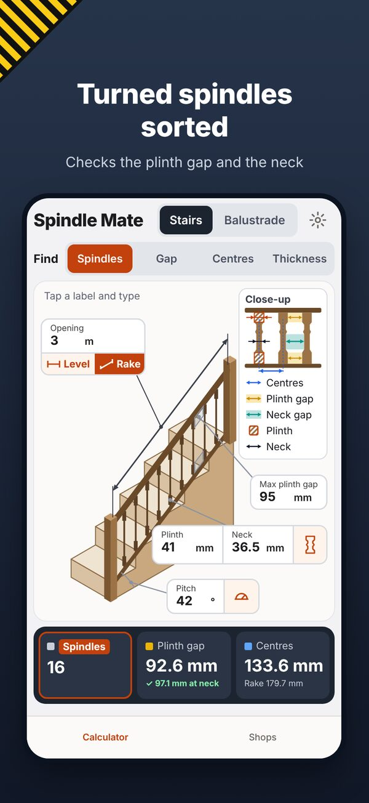

Spindle spacing, sorted on site.
Spindle Mate is a phone app for joiners, coming first to iPhone and then to Android. Put in what you know about a staircase or landing and it works out the rest: how many spindles, the gap, the centres or the spindle thickness. It also checks every answer against the 100mm rule.



What it does
Four ways to calculate
Find the number of spindles, the gap, the centres or the thickness, for stairs or landings.
100mm check
Shows a pass or fail on every result. If it fails, one tap fixes it with the fewest spindles that pass.
Turned spindles
Checks the gap at the plinth blocks as well as at the thinner neck, so turned spindles get the right answer too.
Measures the pitch
Lay your phone on the string or handrail to read the stair angle. No protractor needed.
Any units
Works in mm, cm, metres, inches or feet.
Find the parts
Opens maps to builders' merchants and DIY stores near you, and lists spindles and fixings you can buy online.
Who makes it
Spindle Mate is made by an independent developer in the UK. It has no accounts, adverts or tracking. Some shop links in the app are affiliate links: we may earn commission when you buy through them, at no extra cost to you.